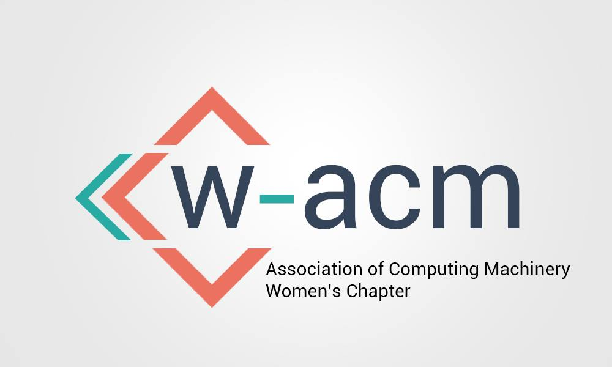

TECH EXPERIENCE

Computer Science Grader and Tutor, Harvey Mudd College
(Aug. 2020 - Present)
- Tutor for Data Structures and Program Development (Spring 2021), Introduction to Computer Science (Fall 2020)
- Guide students in debugging code at weekly tutoring hours
- Grade homework assignments and assessments; provide feedback on programming style
- Explain best practices and concepts like recursion, binary trees, and hash tables in Python and C++
Software Development Intern, Centrify Corporation
(June - Aug. 2019)
- Software Development Intern for Centrify Corporation, a computer security company with products for privileged access management (PAM) and multi-factor authentication (MFA)
- Fixed bugs in system, used JIRA issue tracking software & Perforce version control software
- Wrote unit tests in Go to increase code coverage of unit tests
- Restructured codebase to use interfaces, and introduced mocks in unit tests
Astrophysics Researcher, Summer Science Program
(June - July 2018)
- Observed near-Earth asteroid 2002 UX at Etscorn Observatory, using Celestron-14 telescope
- Determined and visualized 2002 UX's orbit using Python and Method of Gauss
- Improved calculations with differential correction; calculated uncertainties with Monte Carlo sampling; used Swift software to perform orbital integration and run simulations showing potential collisions with Earth, Sun, Venus, Mars
- Published data on 2002 UX in Minor Planet Center Supplement: Lum M., Noel A., & Valadez C. 2018, “New Observations of Near-Earth Asteroid 283729 (2002 UX),” M.P.S. 906049
JOURNALISM EXPERIENCE
Editor-in-Chief, The Muddraker
(Sept. 2019 - Present)
- Editor-in-Chief for The Muddraker, the student newspaper of Harvey Mudd College
- Wrote 5+ articles; designed 10+ spreads using Adobe Photoshop and InDesign; took photos; covered sensitive stories like obituaries, reported on coronavirus
- Led redesign of new website for The Muddraker at themuddraker.org, revamping of online platforms
- Pushed hard to finish 10 pages of design before leaving campus in March 2020, when we were told we had to go home due to COVID-19
- One of my favorite stories was one I wrote about an 81-year-old auditor in my introductory CS class
- Visit The Muddraker online here
Creator, Humans of Mudd
(Feb. 2020 - Present)
- Created a Humans of New York-style page to highlight individuals in the Harvey Mudd College community
- Conducted 35+ interviews, took photos, created designs for social media
- Check out my project: website, Facebook — Humans of Mudd, Instagram — @humansofmudd
- Read about it in the Claremont Colleges student newspaper
News and Opinions Editor, The Student Life
(Sept. 2019 - Dec. 2020)
- News and Opinions Editor for The Student Life newspaper of all seven Claremont colleges
- Solicited guest op-eds from the Claremont community; edited news and opinions pieces
- Covered breaking news and coronavirus, including college reopening plans
- Wrote 10 news articles and 15+ opinions pieces, many with 2000+ views
- Scripps College began implementing Duo multi-factor authentication software after I wrote an article about the benefits of multi-factor authentication, and cited my article in its decision
- Read my stories for The Student Life here
Editor-in-Chief, the Epic
(Aug. 2016 - June 2019)
- Editor-in-Chief of the Epic, the student newspaper of Lynbrook High School
- Oversaw 38 journalists, 5 sections (news, opinion, features, in-depth, sports) in print and online
- Edited 20+ articles per issue; taught staffers to write and use graphic design software
- Wrote 20+ articles, created layouts using Adobe Photoshop and InDesign
- Silver Crown Award from Columbia Scholastic Press Association (CSPA) (awarded in 2020 for 2018-2019 publications)
- 1st Award from American Scholastic Press Association (ASPA) (2017, 2018)
- 1st Place with Special Merit from ASPA (2019)
- View my portfolio of work from my time as part of the Epic here
- Read a selection of my stories from my time as part of the Epic online here
- See past issues of the Epic here
ON CAMPUS
Class of 2023 President, Associated Students of Harvey Mudd College
(Oct. 2019 - Present)
- Represent the Harvey Mudd College Class of 2023
- Attend weekly ASHMC Senate meetings to make decisions benefiting Mudd student body
- Organize events for class unity, integrate Class of 2023 into Claremont community

Women in Computer Science Officer, Harvey Mudd College
(Sept. 2019 - Present)
- Help 500 women find opportunities in computer science
- Organize information sessions with companies, socials with professors, and workshops
- Hosted HackerRank and Technical Interview Workshop with 40+ attendees
Lynbrook High School
(Aug. 2015 - June 2019)
- Editor-in-Chief of the Epic student newspaper
- Vice President of French Honor Society
- Director of Written Events for DECA Business Club (3rd Place in Operations Research at States, qualified for Internationals)
- President of Society of Psychology & Sociology
- Captain of Varsity Tennis Team (Scholar Athlete Award, 2015-2018) (MVP, 2016)
- Science Olympiad